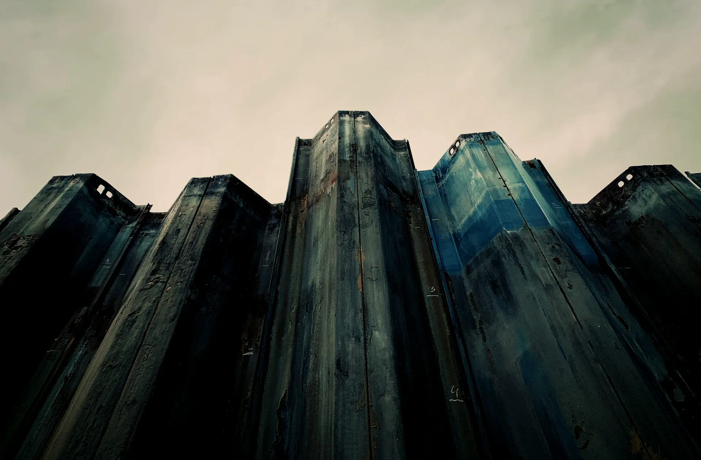

Generálkivitelezés
Egy szerződés, egy felelős műszaki vezető, egy határidő. A beruházónak egy telefonszáma van, nem tizenkettő.
Generálkivitelezőként a teljes építési folyamatot mi visszük. A szakágakat mi szerződtetjük, mi ütemezzük, és a hibáikért is mi felelünk. A beruházó nem az alvállalkozói lánccal tárgyal, hanem velünk, és a jótállás is nálunk marad.
A munkát két ütemre bontjuk, és ezt már az ajánlatban is kimondjuk. Az elsőben, a szerkezetkész és vízhatlan épületig, fix áron dolgozunk. A másodikra, a kulcsátadásig, akkor adunk ajánlatot, amikor a szerkezet már áll.
Ennek egyetlen oka van. A szakipari munkák anyagköltségének nagy része euróban mozog. Aki egy két évvel későbbi gépészet, nyílászáró és burkolat árát ma fix forintban vállalja, az vagy ráterhel egy vastag tartalékot, amit a beruházó feleslegesen fizet ki, vagy elszámolja magát, és a munka felénél leáll. Egyiket sem tartjuk tisztességesnek.
Ha a projektet bank finanszírozza, a hitelező jellemzően egy szerződést és egy teljes bekerülési összeget kér. Ilyenkor a teljes generálkivitelezés egy szerződésbe kerül, az árfolyamkockázatot pedig a szerződés árazási mechanizmusa kezeli, nyíltan, nem elhallgatva.

- I. ütem
- Földmunka, alapozás, monolit vasbeton váz, falazatok, tetőszerkezet. Szerkezetkész, vízhatlan épületig.
- I. ütem ára
- Fix. A tételes költségvetés a szerződés melléklete.
- II. ütem
- Építőmesteri és szakipari munkák a kulcsátadásig.
- II. ütem ára
- Külön ajánlat, a szerkezetkész állapot közelében, a tényleges piaci árakon.
- Banki finanszírozás
- Kérésre a teljes generálkivitelezés egy szerződésben.
- Fedezet
- Projektenként külön C.A.R. kötés, 450, 750 és 900 millió forintos szinteken.
Monolit vasbeton szerkezetépítés
Az első ütem öt fázisa. Mindegyik végén írásos kapu, ami nélkül a következő nem indul.
Belvárosi telken a monolit szerkezet nem ízlés kérdése. Előregyártott elemhez darupálya és tárolóterület kellene, foghíjtelken egyik sincs. A monolit váz a helyszínen épül, bármilyen alaprajzhoz igazodik, és ott is hozzá tud simulni a szomszéd tűzfalához, ahol az utca vonala megtörik.
A munka nehezét a zsaluzat és a vasszerelés adja, a betonozás már csak a következmény. Ezért a kapuink is oda esnek, ahol a hiba még javítható, vagyis a betonozás megkezdése elé.

01 Földmunka
Munkatér-határolás, a szomszédos alapok feltárása, a gödör kiemelése rétegenként, folyamatos víztelenítéssel.
Kapu
Geodéziai bemérés, a tervezett és a mért fenékszint eltérésével, jegyzőkönyvben.
02 Alapozás
Lemez- vagy sávalap, szükség szerint cölöpökkel, a talajmechanikai szakvélemény szerint.
Kapu
Vasszerelés-átvétel tervezői művezetéssel, a betonozás megkezdése előtt.
03 Monolit vasbeton váz
Pillérek, falak és födémek szintenként, keretzsaluval és asztalzsaluval, ütemezett betonozással.
Kapu
Szintenkénti zsaluzat- és vasszerelés-átvétel, majd a próbatestek 28 napos eredménye.
04 Falazatok
Teherhordó falak, válaszfalak, áthidalók, kémény- és aknafalak a kiviteli terv szerint.
Kapu
Falgeometria és nyílásrend ellenőrzése szintenként, a gépészeti kiosztás előtt.
05 Tetőszerkezet
Fedélszék vagy monolit tetőfödém, héjazat és bádogozás, a nyílászárók ideiglenes zárásával.
Kapu
Vízzárósági próba és közös bejárás, ezzel zárul az első ütem.
- Zsalurendszer
- Keretzsalu falakhoz és pillérekhez, asztalzsalu födémekhez.
- Beton
- Üzemi keverés, szállítólevél-nyilvántartással. Minden szállítmány visszakereshető.
- Próbatest
- Szintenként, akkreditált laborban, 7 és 28 napos töréssel.
- Téli betonozás
- +5 °C napi középhőmérséklet alatt csak melegített keverékkel, takarással és írásos technológiai utasítással.
- Utókezelés
- Nedvesen tartás vagy párazáró bevonat, a felület típusa és az időjárás szerint.
A szerkezetkész átadás után a beruházó dönthet úgy, hogy a második ütemet mással viteti végig. Ez nem sértődés kérdése. Az első ütem önmagában is lezárt, dokumentált, számonkérhető munka.
Mélyépítés és alapmegerősítés
A belvárosban nem a saját épületünk a kockázat, hanem a szomszéd.
Foghíjtelken a munkagödör fala a szomszéd ház alapja mellett megy le. Ha ott mozgás indul, az nem a mi szerkezetünkön látszik először, hanem a szomszéd lépcsőházában, a lakók falán, és onnantól a projekt nem műszaki, hanem jogi ügy.
Ezért a munkagödröt mindig határolással nyitjuk: berlini fallal, cölöpsorral vagy résfallal, a talajmechanikai szakvélemény szerint. Ahol a szomszédos alap sekélyebb a tervezett fenékszintnél, aláfalazás vagy talajszegezés készül, szakaszosan, sosem egy hosszban.
Minden érintett épületről állapotfelvétel készül a munkakezdés előtt, fotókkal, repedéstérképpel, a műszaki ellenőr aláírásával. Ez elsősorban a beruházót védi. Ha a munka végén valaki egy húsz éve meglévő repedésért kér kártérítést, a dokumentáció ott van.
| Mérés | Ütem | Hova kerül |
|---|---|---|
| Állapotfelvétel repedéstérképpel | 0. nap | műszaki ellenőr aláírásával |
| Geodéziai süllyedésmérés | 7 naponta | geodéta jelentése |
| Repedésfigyelő leolvasása | 14 naponta | építési napló melléklete |
| Rezgésmérés bontás és cölöpözés alatt | folyamatos | műszeres napló |
| Záró állapotfelvétel | átadáskor | összehasonlító dokumentáció |

Organizáció és engedélyek
Belvárosi telken a fél munka a közterületen dől el, nem a telken belül.
Egy tizenkét méteres utcai homlokzat mögött nincs felvonulási terület. Nincs hol tárolni, nincs hol fordulni, és a daru gémje alatt ott van a szomszéd tetőszerkezete. Az organizációs terv nálunk ezért nem formaság, hanem az ütemterv alapja: a szállítások, az emelések és a bontás napjai előre ki vannak osztva, és a szomszédok is tudnak róluk.
A közterület-foglalást, a forgalomtechnikai tervet és a lakók tájékoztatását mi intézzük. Az érintett házakba tíz nappal a munkakezdés előtt írásos tájékoztató megy, benne a munkaidővel, a várható zajos szakaszokkal és egy telefonszámmal, amit fel is veszünk.
Ez nem udvariasság. Egy bejelentés miatt leállított építkezés napokat visz el, és a leállás mindig a beruházó pénze.
- Közterület
- Kerületi foglalási engedély, jóváhagyott forgalomtechnikai tervvel, havi díjfizetéssel.
- Emelések
- Előre kihirdetett napokon, hétköznap munkaidőben, forgalomirányítás mellett.
- Munkaidő és zaj
- A kerületi rendelet szerint. Hétvégén és ünnepnapon nem dolgozunk.
- Lakók
- Írásos tájékoztató tíz nappal a kezdés előtt, helyszíni kapcsolattartóval.
- Hulladék
- Konténerrendszer, EWC-kód szerint válogatva, szállítólevelekkel.
- Építési napló
- Elektronikus, naponta vezetve, a beruházó számára megnyitva.

Minőség-kapuk
A kapu nem ellenőrzés. A kapu az a pont, ahol a következő munka csak aláírás után indulhat.
Minden fázis végén ugyanaz történik. A felelős műszaki vezetőnk átveszi a munkát, a beruházó műszaki ellenőre ellenőrzi, és ahol tervezői művezetés van, ott a tervező is aláír. A kapu-jegyzőkönyvben ott a dátum, a mért érték, a fotók, és külön sorban az eltérés, ha volt.
Ha egy kapu nem megy át, a munka áll. Ez kellemetlen, de olcsóbb, mint három szinttel feljebb kideríteni, hogy a nyílásrend nem stimmel. A javítás költségét az viseli, akinél a hiba keletkezett, és ez a szerződésben is így szerepel.
A felelős műszaki vezetőink az MMK névjegyzékében szerepelnek, a nyilvántartási számuk kérésre ellenőrizhető. A cég kivitelezői nyilvántartása az MKIK oldalán bárki számára nyilvános.
| Dokumentum | Gyakoriság | Kiállító |
|---|---|---|
| Mérnöki jelentés készültséggel és fotókkal | havonta | felelős műszaki vezető |
| Kapu-jegyzőkönyv | fázisonként | FMV és műszaki ellenőr |
| Beton próbatest törési eredménye | szintenként | akkreditált labor |
| Beépített anyagok teljesítménynyilatkozata | folyamatos | gyártó |
| Geodéziai bemérés | fázisonként | geodéta |
| Átadási dokumentáció megvalósulási tervvel | átadáskor | generálkivitelező |

Projekt-előkészítés és mérnöki konzultáció
A legolcsóbb módosítás az, amit még a tervasztalon csinálunk meg.
A költségtúllépések nagyobb része nem a kivitelezés alatt keletkezik, hanem a kiviteli tervben, hónapokkal korábban. Egy feleslegesen felvett alapozás, egy kiváltható áthidalás vagy egy szerkezetileg indokolatlan pinceszint tíz-húsz milliós tétel, a terven viszont még egy délután alatt javítható.
Ezért a tender előtt is szívesen leülünk. Ha átküldi a helyszínrajzot és a hatályos terveket, két munkanapon belül visszajelzünk arra, hogy amit tervez, az így megépíthető-e, hol látunk benne kockázatot, és nagyságrendileg mibe kerül a szerkezetkész állapot.
- Amit kérünk
- Helyszínrajz, tulajdoni lap, a hatályos engedélyes vagy kiviteli terv.
- Amit adunk
- Építhetőségi vélemény, szerkezeti kiváltási javaslatok, nagyságrendi költségsáv.
- Határidő
- Két munkanap a visszajelzésre, tíz munkanap a tételes árazásra.
- Ki dolgozik rajta
- Felelős műszaki vezető és kalkulátor, nem értékesítő.
- Titoktartás
- Kérésre titoktartási megállapodással. A terveket harmadik félnek nem adjuk ki.
Ha az átnézés végén az derül ki, hogy a projekt nekünk nem való, azt is megmondjuk. Rosszabbul járunk egy olyan munkával, amiről a szerkezetépítés közepén derül ki, hogy nem fér bele.